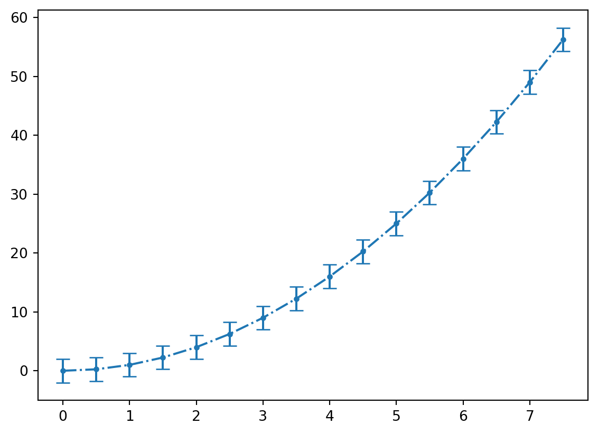

from matplotlib import pyplot as plt
%matplotlib inline
from numpy import linspace,sqrt
sigma = 1
epsilon = 1
r = linspace(0.9,4,20)
energy = 4 * sigma* ((epsilon/r)**12 - (epsilon/r)**6)
plt.figure()
plt.plot(r,energy)11 Basic Plotting
Creating plots is an important task in science and engineering. The old adage “A picture is worth a thousand words!” is wrong…. it’s worth way more than that if you do it right. When making plots of functions on a computer it is important to remember that computers don’t plot functions, rather they plot individual points. Only when you connect those points does the image look like the function you are used to seeing. In this chapter we will use a library called matplotlib for plotting. More specifically, we will import the pyplot function inside of matplotlib. It is customary to use plt as an alias for pyplot.
from matplotlib import pyplot as plt
%matplotlib inlineThe %matplotlib inline statement is a Jupyter notebook command. It tells Jupyter to display any plots generated directly in the notebook instead of in a separate window. If you use matplotlib in another environment, you should remove this line and instead place plt.show() af the plot commands.
11.1 Plotting Functions of a Single Variable
In order to make a plot, matplotlib needs lists of the x and y coordinates for the points that are going to be plotted. If you want to plot a function, the list of x coordinates should be chosen to be a dense array of points spanning the function’s domain and the list of y coordinates should be the function values at those points. A good choice for generating the x-coordinates is either linspace or arange from NumPy. Let’s consider an example. The function shown below is called the Lennard-Jones equation and it gives the energy of two atoms interacting as a function of separation distance
\[ E = 4\sigma\left[ \left({\epsilon\over r} \right)^{12} - \left({\epsilon\over r} \right)^{6}\right]\]
Let’s plot this function from \(0.9\) to \(4.0\).
To Do:
- You may have noticed that the plot doesn’t appear very smooth. Think about what modifications you might make so that the plot is smoother.
- Run the code to verify that you did it correct.
11.1.1 Linestyles, Markers, and Colors
Three optional arguments can help you control the look of the plot: marker, linestyle, and color. All of these arguments take strings. The linestyle argument determines if the line is solid or dashed and what type of dashing to use. The marker argument specifies the shape of the plot marker to be used. Below are tables listing possible options for these arguments.
| Argument | Description |
|---|---|
o |
circle |
* |
star |
p |
pentagon |
^ |
triangle |
s |
square |
| Argument | Description |
|---|---|
- |
solid |
-- |
dashed |
-. |
dash-dot |
: |
dotted |
| Argument | Description |
|---|---|
b |
blue |
r |
red |
k |
black |
g |
green |
m |
magenta |
c |
cyan |
y |
yellow |
Several other keyword arguments exist for helping you customize the look of your plots. They are summarized in the table below.
| Argument | Description |
|---|---|
linestyle or ls |
line style |
marker |
marker shape |
linewidth or lw |
line width |
color or c |
line color |
markersize or ms |
marker size |
Here is the plot from above with some of these keyword arguments added.
from matplotlib import pyplot as plt
%matplotlib inline
from numpy import linspace,sqrt
r = linspace(0.9,4,50)
energy = 4 * ((1/r)**12 - (1/r)**6)
plt.figure()
plt.plot(r,energy,linestyle = '-', marker = 'o', color = 'r')
11.1.2 Labeling Plots
All good plots have axes labels and a title and you can add them to a matplotlib plot using the xlabel(), ylabel(), and title() functions which are placed on their own line after the plot command.
from matplotlib import pyplot as plt
%matplotlib inline
from numpy import linspace,sqrt
r = linspace(0.9,4,50)
energy = 4 * ((1/r)**12 - (1/r)**6)
plt.figure()
plt.plot(r,energy,marker = 'o')
plt.xlabel("Separation Distance")
plt.ylabel("Energy")
plt.title("Lennard-Jones Potential")Text(0.5, 1.0, 'Lennard-Jones Potential')11.1.3 Greek Letters
In physics, Greek letters get used all the time and you may find yourself wanting to use one in a plot title or axes label. This can be accomplished by placing an r in front of the title string and then placing the name of the greek variable inside of $ with a backslash in front of it. This is better illustrated with an example.
from matplotlib import pyplot as plt
%matplotlib inline
from numpy import linspace,sqrt
r = linspace(0.9,4,50)
energy = 4 * ((1/r)**12 - (1/r)**6)
plt.figure()
plt.plot(r,energy,marker = 'o')
plt.xlabel("Separation Distance")
plt.ylabel("Energy")
plt.title(r"Lennard-Jones Potential ($\theta$)")Text(0.5, 1.0, 'Lennard-Jones Potential ($\\theta$)')You can subscript any character using the _ character followed by the subscript. \(\theta_1\) can be written as \theta_1. If the subscript is more than one character, you’ll need to enclose it in curly braces. \(\theta_{12}\) is written as \theta_{12}. Superscripts work the same way only using the ^ character instead of the underscore.
| Argument | Description |
|---|---|
| \(\alpha\) | \alpha |
| \(\beta\) | \beta |
| \(\gamma\) | \gamma |
| \(\delta\) | \delta |
| \(\epsilon\) | \epsilon |
| \(\phi\) | \phi |
| \(\theta\) | \theta |
| \(\kappa\) | \kappa |
| \(\lambda\) | \lambda |
| \(\mu\) | \mu |
| \(\nu\) | \nu |
| \(\pi\) | \pi |
| \(\rho\) | \rho |
| \(\sigma\) | \sigma |
| \(\tau\) | \tau |
| \(\xi\) | \xi |
| \(\zeta\) | \zeta |
11.1.4 Controlling the Axes
By default, matplotlib will size the plot window to include all of the points. If you want to zoom in our out, you can do so with the xlim and ylim functions. These functions should be placed after the plot command on their own line just like the label commands.
from matplotlib import pyplot as plt
%matplotlib inline
from numpy import linspace,sqrt
r = linspace(0.9,4,50)
energy = 4 * ((1/r)**12 - (1/r)**6)
plt.figure()
plt.plot(r,energy,marker = 'o')
plt.xlim(0.5,3)
plt.ylim(-1.25,5)
plt.xlabel("Separation Distance")
plt.ylabel("Energy")
plt.title("Lennard-Jones Potential")Text(0.5, 1.0, 'Lennard-Jones Potential')11.1.5 Overlaying Plots
Often you will want to plot more than one set of data on the same set of axes. This can be accomplished two ways. The first way is to call the plot function twice in the same Jupyter notebook cell. Matplotlib will automatically place the plots on the same figure and scale it appropriately. Below you will find a plot of the Lennard-Jones potential for two choices of the parameters \(\sigma\) and \(\epsilon\).
from matplotlib import pyplot as plt
%matplotlib inline
from numpy import linspace,sqrt
r = linspace(0.9,4,50)
sigmaOne = 1
epsilonOne = 1
sigmaTwo = 2
epsilonTwo = 2
energyOne = 4 * sigmaOne* ((epsilonOne/r)**12 - (epsilonOne/r)**6)
energyTwo = 4 * sigmaTwo * ((epsilonTwo/r)**12 - (epsilonTwo/r)**6)
plt.figure()
plt.plot(r,energyOne,marker = 'o')
plt.plot(r,energyTwo,marker = '+')
plt.xlim(0.5,3.5)
plt.ylim(-2,5)
plt.xlabel("Separation Distance")
plt.ylabel("Energy")
plt.title("Lennard-Jones Potential")Text(0.5, 1.0, 'Lennard-Jones Potential')The other way to overlay plots is to include both sets of data into a single plot command.
from matplotlib import pyplot as plt
%matplotlib inline
from numpy import linspace,sqrt
r = linspace(0.9,4,50)
sigmaOne = 1
epsilonOne = 1
sigmaTwo = 2
epsilonTwo = 2
energyOne = 4 * sigmaOne* ((epsilonOne/r)**12 - (epsilonOne/r)**6)
energyTwo = 4 * sigmaTwo * ((epsilonTwo/r)**12 - (epsilonTwo/r)**6)
plt.figure()
plt.plot(r,energyOne,r,energyTwo,marker = 'o')
plt.xlim(0.5,3.5)
plt.ylim(-2,5)
plt.xlabel("Separation Distance")
plt.ylabel("Energy")
plt.title("Lennard-Jones Potential")Text(0.5, 1.0, 'Lennard-Jones Potential')
11.1.6 Plot Legends
Often when your figure contains more than one plot, it is helpful to include a plot legend to label the plots. To add a legend, you must first use the keyword argument label to each plot command to specify each plot’s label. To add the legend, use the command pyplot.ledend(). An example is given below:
from matplotlib import pyplot as plt
%matplotlib inline
from numpy import linspace,sqrt
r = linspace(0.9,4,50)
sigmaOne = 1
epsilonOne = 1
sigmaTwo = 2
epsilonTwo = 2
energyOne = 4 * sigmaOne* ((epsilonOne/r)**12 - (epsilonOne/r)**6)
energyTwo = 4 * sigmaTwo * ((epsilonTwo/r)**12 - (epsilonTwo/r)**6)
plt.figure()
plt.plot(r,energyOne,marker = 'o',label = "plot1")
plt.plot(r,energyTwo,marker = 'x',label = "plot2")
plt.xlim(0.5,3.5)
plt.ylim(-2,5)
plt.xlabel("Separation Distance")
plt.ylabel("Energy")
plt.title("Lennard-Jones Potential")
plt.legend()<matplotlib.legend.Legend at 0x1197124f0>11.2 Other Plot Types
Beyond the line plot that we learned about in the previous section, matplotlib can generate many other types of plots that are very useful in a scientific setting. We’ll explore some of them here.
11.2.1 Logarithmic Plots
Sometimes the function being plotted increases or decreases by many orders of magnitude and a normal linear plot would not be particularly useful. Logarithmic plots can be made with the use of the semilogx, semilogy, or loglog functions depending on which axes you want to be on a logarithmic scale. Consider the first plot produced below. Notice that it rises from \(0\) at \(x = 0\) to \(10^{45}\) at \(x = 100\). Plotting this function with the y-axis scaled logarithmically will smooth out the plot and make it easier to analyze.
from matplotlib import pyplot as plt
%matplotlib inline
from numpy import linspace,exp
x = linspace(0,100,200)
y = exp(x)
plt.figure()
plt.plot(x,y)
plt.figure()
plt.semilogy(x,y)

11.2.2 Bar Plots
A bar plot and a scatter plot are quite similar except that instead of a plot marker indicating the associated value, the height of the bar represents the value. You can make a bar plot using the bar function inside of pyplot.
from matplotlib import pyplot as plt
%matplotlib inline
from numpy import linspace,sqrt
#d = [5.8e10,1.9e11,1.5e11,2.3e11,7.8e11,1.4e12,2.9e12,4.5e12]
d = [1,2,3,4,5,6,7,8]
T = [0.241,0.615,1,1.88,11.9,29.5,84,165]
plt.figure()
plt.bar(d,T,tick_label = ["Mercury","Venus","Earth","Mars","Jupyter","Saturn","Uranus","Neptune"])
plt.xlabel("Planet Name")
plt.ylabel("Length of day (in earth days)")
plt.title("Length of day for planets in our solar system")Text(0.5, 1.0, 'Length of day for planets in our solar system')Notice the optional argument tick_labels used to add labels to the bars. If that were left off, the bars would be labeled using the numbers supplied. Other optional arguments that are available for the bar command are given below.
| Argument | Description |
|---|---|
width |
bar width |
color |
bar color |
xerr |
X error bar |
yerr |
Y error bar |
capsize |
size of caps on error bars |
11.2.3 Errorbar Plots
To make plots with error bars use matplotlilb’s errorbar function. You can choose to add error bars on the x or y axis using the keyword arguments xerr and yerr.
from matplotlib import pyplot as plt
from numpy import arange
x = arange(0,8,0.5)
y = x**2
x_err = 0.05 # Same error for all points
y_error = 2 # Different error for each point
plt.errorbar(x,y,linestyle = '-.', marker = 'o',markersize = 3,yerr=y_error,capsize = 5)<ErrorbarContainer object of 3 artists>
The linestyle, marker, and markersize arguments work with this plot type also.
11.2.4 Scatter Plots
We have already generated scatter plots using the plot function but you can also use the scatter command to do the same thing. The only other additional functionality with scatter is the ability to specify the color, shape, and size of each plot marker individually.
from matplotlib import pyplot as plt
%matplotlib inline
from numpy import linspace,log
d = [5.8e10,1.9e11,1.5e11,2.3e11,7.8e11,1.4e12,2.9e12,4.5e12]
#d = [1,2,3,4,5,6,7,8]
T = [0.241,0.615,1,1.88,11.9,29.5,84,165]
mass = [3.2e23,4.9e24,6e24,6.4e23,1.9e27,5.7e26,8.7e25,1e26]
plt.figure()
plt.scatter(d,T,c = mass,s= 50)
plt.xlabel("Orbital Distance from Sun")
plt.ylabel("Length of day (in earth days)")
plt.title("Length of day for planets in our solar system (color indicates mass)")
plt.colorbar()<matplotlib.colorbar.Colorbar at 0x1199b5fd0>
11.2.5 Histograms
Histograms display bars representing the frequency of values in a given data set. Unlike bar plots, the width of the bar is meaningful since the each bar represents the number of x-values that fall within a range given by the width of the bar. A histogram can be constructed using the hist function. There is only one required argument, which is the data set. Some commonly used keyword arguments are bins which specifies how many equally-spaced groups (called bins) to generate and edgecolor which can be used to specify the color of the bar’s edges.
from matplotlib import pyplot as plt
%matplotlib inline
from numpy import linspace,log
densities = [0.00009,0.000178,0.00125,0.001251,0.001293,0.001977,0.534,0.810,0.900,0.920,0.998,1.000,1.03,1.03,1.25,1.600,1.7,2.6,2.7,3.5,5.515,7.8,7.8,8.6,8.5,11.3,13,13.6,18.7,19.3,21.4,22.4,22.6]
plt.figure()
plt.hist(densities,bins = 5,edgecolor = 'r')
plt.xlabel("Material Densities")
plt.title(r"Histogram of Material Densities (g/cm$^3$)")Text(0.5, 1.0, 'Histogram of Material Densities (g/cm$^3$)')
Here we have used bins = 5 which will produce a histogram with \(5\) equal-size bins. Alternatively, we can specify the exact locations of all the bin edges by placing them in a list.
from matplotlib import pyplot as plt
%matplotlib inline
from numpy import linspace,log
densities = [0.00009,0.000178,0.00125,0.001251,0.001293,0.001977,0.534,0.810,0.900,0.920,0.998,1.000,1.03,1.03,1.25,1.600,1.7,2.6,2.7,3.5,5.515,7.8,7.8,8.6,8.5,11.3,13,13.6,18.7,19.3,21.4,22.4,22.6]
plt.figure()
plt.hist(densities,bins = [0,2.5,5,7.5,10,12.5,15,17.5,20,22.5],edgecolor = 'r')
plt.xlabel("Material Densities")
plt.title(r"Histogram of Material Densities (g/cm$^3$)")Text(0.5, 1.0, 'Histogram of Material Densities (g/cm$^3$)')11.2.6 Polar Plots
In a polar plot instead of providing \((x,y)\) coordinates, you provide \((r,\theta)\) coordinates, where \(r\) is the radial distance from the origin and \(\theta\) is the angular location on the unit circle.
from matplotlib import pyplot as plt
%matplotlib inline
from numpy import linspace,pi,sin
theta = linspace(0,4 * pi,150)
r = sin(2* theta)
plt.figure()
plt.polar(theta,r)11.3 Multifigure Plots
To generate multiple, independent plots in the same figure a few more lines of code are necessary to specify how you want the plots arranged. There are two general methods for doing that and we will demonstrate both of them. In the first method, you’ll first use the figure() command to generate a figure and the subplot() function to generate the individual plots in the figure. The subplot function take three arguments.
subplot(rows,columns,plot_number)As an example, to generate a figure of two plots side by side.
from matplotlib import pyplot as plt
%matplotlib inline
from numpy import linspace,sqrt
r = linspace(0.9,4,50)
sigmaOne = 1
epsilonOne = 1
sigmaTwo = 2
epsilonTwo = 2
energyOne = 4 * sigmaOne* ((epsilonOne/r)**12 - (epsilonOne/r)**6)
energyTwo = 4 * sigmaTwo * ((epsilonTwo/r)**12 - (epsilonTwo/r)**6)
plt.figure()
plt.subplot(1,2,1)
plt.plot(r,energyOne,marker = '+',color = 'k')
plt.xlim(0.5,3.0)
plt.ylim(-1.5,5)
plt.xlabel("Separation Distance")
plt.ylabel("Energy")
plt.title("Lennard-Jones Potential")
plt.subplot(1,2,2)
plt.plot(r,energyTwo,marker = 'o',color = 'r')
plt.xlim(0.5,4.0)
plt.ylim(-2,5)
plt.xlabel("Separation Distance")
plt.ylabel("Energy")
plt.title("Lennard-Jones Potential")Text(0.5, 1.0, 'Lennard-Jones Potential')
Pay close attention to the subplot function. subplot(1,2,1) will generate a \(1\) x \(2\) grid of plots and place the next plot generated at the 1st location. Below is an example of a more advanced array of plots. Pay close attention to the subplot functions until you understand.
from matplotlib import pyplot as plt
%matplotlib inline
from numpy import linspace,sqrt
r = linspace(0.9,4,50)
sigmaOne = 1
epsilonOne = 1
sigmaTwo = 2
epsilonTwo = 2
energyOne = 4 * sigmaOne* ((epsilonOne/r)**12 - (epsilonOne/r)**6)
energyTwo = 4 * sigmaTwo * ((epsilonTwo/r)**12 - (epsilonTwo/r)**6)
plt.figure()
plt.subplot(2,1,1)
plt.plot(r,energyOne,marker = '+',color = 'k')
plt.xlim(0.5,3.0)
plt.ylim(-1.5,5)
plt.xlabel("Separation Distance")
plt.ylabel("Energy")
plt.title("Lennard-Jones Potential")
plt.subplot(2,2,3)
plt.plot(r,energyTwo,marker = 'o',color = 'r')
plt.xlim(0.5,4.0)
plt.ylim(-2,5)
plt.xlabel("Separation Distance")
plt.ylabel("Energy")
plt.title("Lennard-Jones Potential")
plt.subplot(2,2,4)
plt.plot(r,energyTwo,marker = 'o',color = 'r')
plt.xlim(0.5,4.0)
plt.ylim(-2,5)
plt.xlabel("Separation Distance")
plt.ylabel("Energy")
plt.title("Lennard-Jones Potential")
plt.tight_layout()The other method for generating an array of plots is similar to the first but different functions are used and a little more control over the plots is gained. In this approach, functions to explicitly creates and links subplots, called axes are used. Just as before, the figure function is used to generate the overall figure. The create each subplot, the add_subplot(rows,columns, plot_number) function is used. The arguments to this function are the same as for subplot in the previous method. After the plot object has been created, we can call the plot function again, but this time preceded by the axes object that you just created. Here is an example.
from matplotlib import pyplot as plt
%matplotlib inline
from numpy import linspace,sqrt
r = linspace(0.9,4,50)
sigmaOne = 1
epsilonOne = 1
sigmaTwo = 2
epsilonTwo = 2
energyOne = 4 * sigmaOne* ((epsilonOne/r)**12 - (epsilonOne/r)**6)
energyTwo = 4 * sigmaTwo * ((epsilonTwo/r)**12 - (epsilonTwo/r)**6)
fig = plt.figure()
ax1 = fig.add_subplot(2,1,1)
ax1.plot(r,energyOne,marker = '+',color = 'k')
ax1.set_xlim(0.5,3.0)
ax1.set_ylim(-1.5,5)
ax1.set_xlabel("Separation Distance")
ax1.set_ylabel("Energy")
ax1.set_title("Lennard-Jones Potential")
ax2= fig.add_subplot(2,2,3)
ax2.plot(r,energyTwo,marker = 'o',color = 'r')
ax2.set_xlim(0.5,4.0)
ax2.set_ylim(-2,5)
ax2.set_xlabel("Separation Distance")
ax2.set_ylabel("Energy")
ax2.set_title("Lennard-Jones Potential")
ax3 = fig.add_subplot(2,2,4)
ax3.plot(r,energyTwo,marker = 'o',color = 'r')
ax3.set_xlim(0.5,4.0)
ax3.set_ylim(-2,5)
ax3.set_xlabel("Separation Distance")
ax3.set_ylabel("Energy")
ax3.set_title("Lennard-Jones Potential")
plt.tight_layout()
Notice the set_xlim, set_ylim, set_xlabel etc methods that were used to customize each individual plot. There are a host of other methods available for further customization. This website has a comprehensive list of them.
11.4 Flashcards
- Describe how to make a simple, no frills plot of a function. Give a short example.
- How do you modify your plot style to be a red dashed line with triangle markers?
- What is the
mskeyword argument used for when plotting? - How do you add axes labels to a plot?
- How do you add a title to a plot?
- How do you insert greek letters into a plot title or axes label?
- How do you control the size of the plot windown (i.e. zoom in or out.)
- How do you plot multiple plots on the same figure?
- List the other types of plots discussed in this chapter.
- How do you make multi-figure plot? Give an example showing the functions that should be used.
- Where can you find the account of Abinadi?
11.5 Exercises
- If you were to shine a laser through a very narrow slit, you would see a pattern very similar to the one shown below. The function that describes this light pattern is called a sinc function:\[ y(x) = \left({\sin x\over x}\right)^2\] Plot this function from \(-20 < x < 20\).

Then make the following customizations to the plots:
1. Set the color of the line to be green. 2. Add axes labels to the plot. The x-label should be “Location” and the y-label should by “Intensity”. 3. Add the following title to the plot: “Single-Slit diffraction pattern”
# python code hereMax Planck discovered that all objects emit a spectrum of light and the intensity of that spectrum is given by the following function (we did this in a previous homework problem) \[ I(\lambda) = {2 \pi h c^2 \over \lambda^5} {1\over e^{hc \over \lambda k_BT} - 1}\] where
- \(c = 3.0 \times 10^8\) m/s is the speed of light.
- \(h = 6.26 \times 10^34\) m\(^2\) kg /s is Plank’s constant.
- \(k_B = 1.38 \times 10^{-23}\) m\(^2\)kg s\(^{-2}\) K\(^{-1}\) is the Boltzmann constant.
- T is temperature in Kelvins.
- \(\lambda\) is wavelength in meters.
Follow the steps below to plot this function for several different temperatures:
- Copy the function that you made previously into the cell below. (or build it from scratch)
- Use
numpy.vectorizeto vectorize your function. - Use
numpy.linspaceto generate a grid of 500 \(\lambda\) values from \(0 \rightarrow 3 \times 10^{-6}\) m. - Call your vectorized function for \(T = 5780\) K (temperature of the sun), producing a list of intensities.
- Plot intensity vs. \(\lambda\) .
- Repeat steps 4 and 5 for \(T = 4500\) K. You should have two plots on the same figure. Choose the line style and color to be different than the first plot.
- Add a legend to the figure. Use the temperatures as the labels.
This file contains telemetry data for a weather balloon that was launched by the BYU-Idaho High Altitude Research Team (HART). The 5th and 7th columns in the file contain the speed and altitude of the balloon respectively. Read the data file and extract the speed and altitude of the balloon into lists or arrays. Then make a scatter plot of the data. Add axes and plot labels to your plot.
This file contains worldwide earthquake data from the years 1973 to 2021. The fourth column in the file contains the magnitude of the earthquakes. Read the file and plot a histogram of this column. Then write a single statement summarizing what this plot is communicating to you. Note: The file is zipped so you’ll need to unzip it before you can read it in.
(Extra Credit) The 8th column in the Earthquakes data file contains the date of the earthquake. Write a code to plot the number of earthquakes that occurred per year from 1973 to 2021.